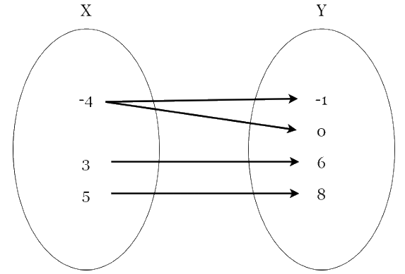

Relation and Functions
A Relation is a set of ordered pairs defining the relation between two sets.
A Function is a relation in which each element of the domain corresponds to exactly one element of the range.
Relation and function using Set
{(-6,-9) (-4,-2) (0,1) (3,5) (7,8)
Relation that is not a function using Set
{(-8, -6) (-8,-4) (2,0) (4,3) (4,6)}
Function and relation using Mapping Diagram
Relation that is not a function using Mapping Diagram

Relation and function using Table of Values
| X | Y |
|---|---|
| -1 | -6 |
| 0 | 0 |
| 4 | 3 |
| 6 | 9 |
Relation that is not a function using Table of Values
| X | Y |
|---|---|
| -4 | -1 |
Domain and Range
The domain of a function is the set of all values for which the function is defined. The range of the function is the set of all values that f takes.
Example of One-to-One
Example of One-to-Many
Example of Many-to-One
Dependent and Independent Variables
An Independent Variable is a variable that represents a quantity that is being manipulated in an experiment.
Dependent Variable represents a quantity whose value depends on those manipulations
Examples
The writer decides the number of words that they use before checking the amount of paper they have left.
Dependent Variable : amount of paper
Independent Variable : number of words
The facilitators check the amount of people attending the seminar before preparing the amount of chairs needed.
Dependent Variable : amount of chairs
Independent Variable : amount of people
Gardeners usually check the amount of fertilizer they have to reach their desired height of the plant.
Dependent Variable : height of the plant
Independent Variable : amount of fertilizer
Graph of Linear Function
A Linear Function is defined as a function that has either one or two variables without exponents. It is a function that graphs to the straight line.
Linear functions are represented by the equation y = mx + c where m is the slope and c is the y-intercept.
Examples
f(x) = 2/3x + 3
m= ⅔
y-intercept= (0,3)
f(x) = -2/5x -4
m= -⅖
y-intercept= (0,-4)
f(x) = 6
m= 0
y-intercept= (0,6)